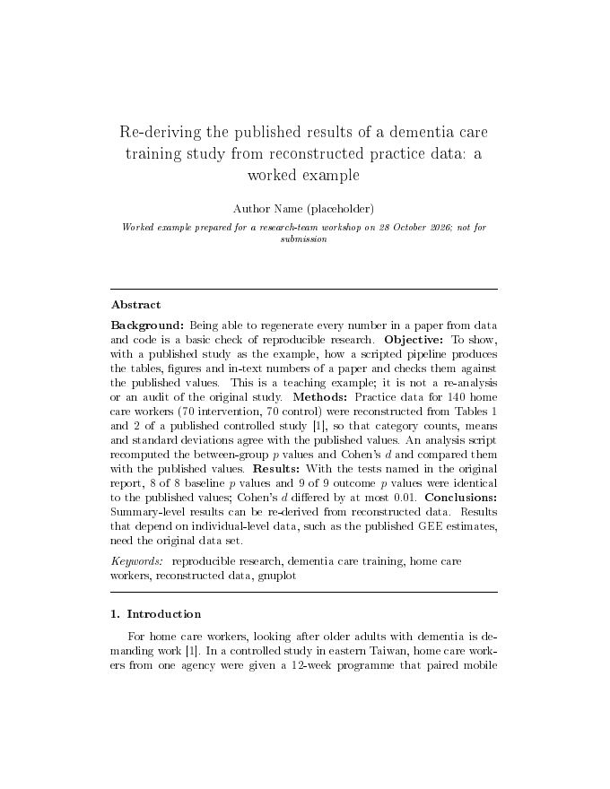
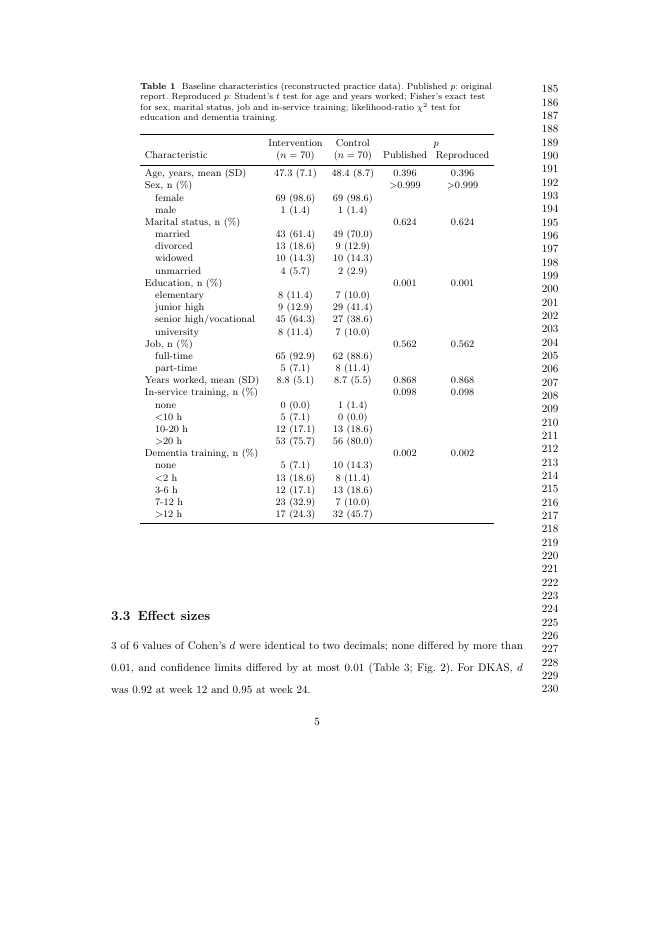
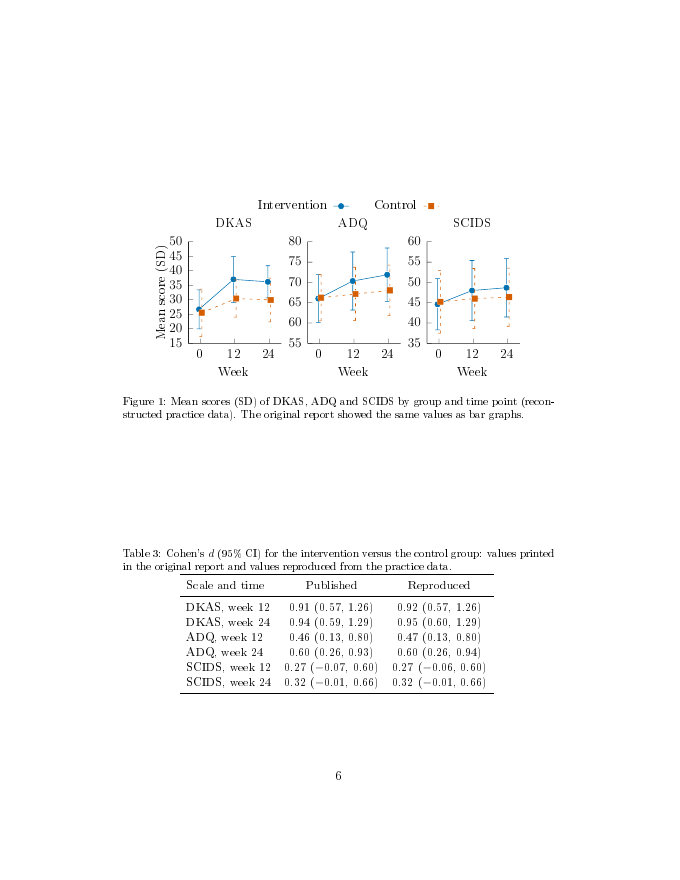

這條流程的做法：數字由分析程式寫出來，文獻由 Zotero 匯出，圖由 gnuplot 照一支小腳本畫出來。改源頭，請 AI 重跑一次，全部一起更新。
| Word 手動維護 | LaTeX＋AI 流程 | |
|---|---|---|
| 改一筆資料 | 內文、表、圖、摘要逐處改 | 重跑一次，數字全部更新 |
| 引用文獻 | 插入、重排編號，容易漏 | 連到 Zotero；引了書目裡沒有的文獻，產生 PDF 時會停下來告訴你是哪篇 |
| 圖 | 另外畫、貼上，字型跟內文不同 | gnuplot 腳本畫，圖上的字跟內文同一套字型 |
| 換期刊格式 | 重新排版 | 換期刊範本就換好排版；字數、圖表規定再照投稿須知調 |
| AI 幫忙 | 複製貼上來回 | 純文字，AI 讀得懂、改得動；改完它會告訴你改了哪些檔 |
| 合作者只會 Word | 直接用 | 另外出一份 Word 給他（只收 Word 的期刊也是） |
分得清
你說話、AI 動手、程式跑、你看 PDF
你的論文資料夾分兩半：原料放 source/，成品在 output/。要改結果就改原料，再請 AI「跑一次 build」（一次做完算數字、畫圖、檢查文獻、排成 PDF）；成品每次重做，不要手改。每個檔案都標了誰會用到。平常你自己要打開的是：README.md（使用說明；在 GitHub 上打開你的論文資料夾，往下捲就看得到）、你的資料（用 Excel）、Zotero，和 output/main.pdf（論文）。不知道檔案在電腦的哪裡，就問 AI。
| 檔案 | 做什麼 | 誰會用 | 什麼時候 |
|---|---|---|---|
README.md | 給你看的使用說明 | 你 | 第一次打開時 |
build.py | 一次跑完：分析 → 畫圖 → 檢查文獻 → 排成 PDF | AI 執行 | 你說「跑一次 build」 |
source/data/ | 研究資料（範例是依所長論文重建的練習資料） | 你放進來 | 符合四個條件才放（見第 07 段） |
source/refs/refs.bib | 書目 | Zotero 自動匯出 | 用接法 A：你把文獻加進 Zotero 的那個文獻集，它就跟著更新（見第 05 段） |
source/scripts/analyze.py | 統計分析：算出論文裡的數字、表、畫圖用的小表 | build 自動跑 AI 修改 | 換資料、換統計方法時，AI 改它 |
source/gnuplot/*.gp | gnuplot 畫圖腳本，一張圖一個 | build 自動跑 AI 修改 | 要加圖、改圖時，AI 改它 |
source/tables/（選用） | 你用 Excel 做好的表（另存成 CSV UTF-8），build 自動轉成論文裡的表格 | 你放進來 | 想放一張自己做的表時 |
source/figdata/（選用） | 你用 Excel 做好的畫圖資料（CSV UTF-8），gnuplot 讀它畫圖 | 你放進來 | 想用自己的資料畫圖時 |
source/images/（選用） | 現成的圖片檔：流程圖、照片（PNG、JPG），build 原樣複製，放進論文 | 你放進來 | 想放一張現成的圖時（練習頁第 03 段有「放哪裡」對照表） |
source/paper/main.tex | 論文本文（LaTeX） | AI 寫、改 | 寫作時；你看的是排出來的 PDF |
source/paper/sn-jnl.cls、sn-vancouver-num.bst | 期刊範本檔：Springer Nature 官方的版型和 Vancouver 參考文獻格式（BMC Geriatrics 建議用的） | build 自動帶去排版 | 不要改；換期刊時，把新期刊的範本檔放進這個資料夾 |
output/ | 成品：內文數字、表（.csv 用 Excel 打得開）、畫圖用的小表、圖、main.pdf | build 自動產生 | 不要手改；刪掉也能重做 |
material/ | 你的材料：計畫書、投稿須知 | 你放 AI 只讀 | 換期刊、寫計畫時 |
workspace/ | AI 的工作紀錄：紙條、報告、log.md | AI 寫 | 想知道 AI 做了什麼時打開看 |
tools/new_paper.py | 開一篇新論文：把範例收進 examples/、換上空白的骨架 | AI 執行 | 開始寫自己的論文時（第 04 段第 4 步） |
examples/ | 收起來的範例論文，隨時能打開參考 | 你看 | 開了新論文之後才會出現 |
tools/make_practice_data.py | 重建練習資料 | AI 執行 | 只有練習時；換成真資料就不用 |
tools/zotero_export.py | 從 Zotero 匯出書目（不裝外掛的接法） | AI 執行 | 只有用第 05 段的接法 C 時 |
AGENTS.md、WORKFLOW.md | 給 AI 看的規則和流程說明書 | AI 開工先讀 | 每次；你不用背 |
.github/workflows/ | 推上 GitHub 後，雲端自動排一份 PDF | GitHub 自動跑 | 每次推上去 |
pyproject.toml、uv.lock | 統計用的程式清單，uv 照它裝 | uv 自動用 | 你不用動 |
AI 動手前會不會先問你，看行前準備第 7 項設的權限：
- Codex（要求核准，英文介面 Ask for approval）：在你打開的資料夾裡會直接建檔、改檔、跑程式；動資料夾以外的檔案、上網或裝東西，才會先問你。
- Claude 的 Code（Manual）：改檔、跑指令前都會先問你；只是讀檔案不會問。
- 跳出要你核准的框：看得懂、是你剛請它做的事（例如跑 build、改 analyze.py、.gp 或 main.tex），就按同意（只同意這一次）。看不懂，就按拒絕，拒絕不會弄壞東西；再問它「這一步要做什麼、為什麼要做」，或截圖問網頁版。
所以你的保護靠的是做完之後看結果：PDF、AI 的報告、它說改了哪些檔。重要的事（裝東西、刪檔、推上 GitHub），可以先跟它說「先告訴我你要做什麼，等我說好再做」。
裝得好
TeX、gnuplot、pandoc、Python 套件，請 AI 幫你裝
TeX Live 是什麼？要裝哪一個？
LaTeX 原稿要變成 PDF，電腦裡要先裝一套排版軟體，統稱 TeX。最完整的一套叫 TeX Live，每年出一版；Mac 版的 TeX Live 叫 MacTeX。Windows 另有一套 MiKTeX，第一次裝比較小，缺什麼再自動補。三套都能用，範本不挑。
論文或文獻有中文（例如引了台灣的中文期刊），跟 AI 說「論文裡有中文，請改用 xelatex」就好（xelatex 是能排中文的那一種排版方式），中文字型已經設好。
| 工具 | 用途 | 建議裝 |
|---|---|---|
| TeX | 把 LaTeX 原稿排成 PDF | MiKTeX（比較小；要打開「缺套件時自動安裝」）。想一次裝齊也可以裝 TeX Live，但檔案很大 |
| gnuplot | 畫圖 | gnuplot 官方安裝檔 |
| uv（準備統計用的程式） | 統計分析 | uv：一個小工具，會自己把統計要用的 Python 程式和它需要的零件，裝在你的論文資料夾裡，不動電腦原本裝的 Python |
| pandoc | 轉成 Word（期刊只收 Word 時才用得到；下面那句會一起裝） | pandoc 官方安裝檔 |
先做第 04 段第 1 步（建好你的論文資料夾 ai-paper-kit、在 AI 助手裡打開它），再回來這裡。在打開 ai-paper-kit 的那個 AI 助手裡貼：
請幫我裝寫論文要用的工具。每裝一個之前，先告訴我要裝什麼、從哪裡裝，我同意再裝；要我輸入電腦密碼時先停下來，我自己輸入。 1. TeX：用 winget 裝 MiKTeX（winget install -e --id MiKTeX.MiKTeX），裝好後把「缺套件時自動安裝」設成「是」（不要選每次問我），你在背景跑的時候才不會卡住。 2. gnuplot：用 winget 裝（winget install -e --id gnuplot.gnuplot）。裝好後打 gnuplot --version；如果找不到、或沒有印出版本就結束（winget 建的捷徑可能缺檔），請找出 gnuplot.exe 所在的 bin 資料夾，先告訴我你打算把它加進「使用者」的 PATH、會影響什麼，我同意再加；加完請我把 Codex／Claude 關掉重開，再打一次 gnuplot --version。 3. uv：用 winget 裝（winget install -e --id astral-sh.uv）。裝好後請我把 Codex／Claude 關掉重開，再到範本資料夾執行 uv sync（第一次會下載 Python 和套件，要幾分鐘）。 4. pandoc：winget install -e --id JohnMacFarlane.Pandoc。 全部裝完，請一一執行 pdflatex --version、gnuplot --version、uv run python --version、pandoc --version，把版本號列給我看。
螢幕如果變暗，跳出 Windows 的「您要允許此 App 變更您的裝置嗎？」，跟行前準備第 8 項一樣：視窗上的名稱是 MiKTeX、gnuplot、uv 或 pandoc 就按「是」；名稱看不懂或對不上，就按「否」，截圖問網頁版（字樣以你的畫面為準）。
AI 請你把 Codex／Claude 關掉重開時（可能一到兩次）：整個關掉再打開，照行前準備第 6 項打開 ai-paper-kit，貼這句（10/22 用 Codex 實跑過：四樣都找得到時，它只跑 uv sync、列出四個版本號）：
我剛把 AI 助手關掉重開了。我們在裝寫論文要用的工具，請先檢查 pdflatex、gnuplot、uv、pandoc 哪幾個已經找得到，再接著裝還沒好的；uv 裝好了但範本資料夾還沒執行過 uv sync，也幫我做。規則跟剛才一樣：每裝一個先告訴我，我同意再裝。全部裝完，請一一執行 pdflatex --version、gnuplot --version、uv run python --version、pandoc --version，把版本號列給我看。
| 工具 | 用途 | 建議裝 |
|---|---|---|
| TeX | 把 LaTeX 原稿排成 PDF | MacTeX（Mac 版 TeX Live，約 6.4 GB，要 macOS 11 以上）。硬碟不夠就裝 BasicTeX（約 134 MB），缺的套件再補 |
| gnuplot、pandoc、uv | 畫圖、轉 Word、準備統計用的程式 | 用 Homebrew（Mac 上裝軟體的小工具）裝；uv 會自己裝好統計要用的程式 |
先做第 04 段第 1 步（建好你的論文資料夾 ai-paper-kit、在 AI 助手裡打開它），再回來這裡。在打開 ai-paper-kit 的那個 AI 助手裡貼：
請幫我裝寫論文要用的工具。每裝一個之前，先告訴我要裝什麼、從哪裡裝，我同意再裝；要我輸入電腦密碼時先停下來，我自己輸入。 1. TeX：裝 MacTeX（brew install --cask mactex，或到 tug.org/mactex 下載，約 6.4 GB）。我的硬碟空間不夠的話，先問我要不要改裝 BasicTeX。 2. 用 Homebrew 裝 gnuplot、pandoc 和 uv（brew install gnuplot pandoc uv）；沒有 Homebrew 的話先告訴我。如果 brew 開始從原始碼編（訊息出現 Building from source、或跑超過 10 分鐘），先停下來告訴我，改用：pandoc 到 pandoc.org 下載官方安裝檔；gnuplot 用 micromamba 從 conda-forge 裝（只裝在使用者資料夾，不動系統）。 3. 到範本資料夾執行 uv sync（第一次會下載 Python 和套件，要幾分鐘）。 全部裝完，請一一執行 pdflatex --version、gnuplot --version、uv run python --version、pandoc --version，把版本號列給我看。
MacTeX 很大，下載要一段時間，建議前一天晚上裝。也可以自己裝：到 tug.org/mactex 下載 MacTeX.pkg，雙擊，照畫面一步一步按下去，要密碼時輸入開機密碼；裝好後跟 AI 說「TeX 我自己裝好了，請從第 2 項開始」。AI 要你在「終端機」輸入密碼（例如裝 Homebrew 或 MacTeX 時）：請它一步一步告訴你打開哪個程式、貼哪一行；打密碼時畫面不會出現字，打完按 return。
Intel 晶片的 Mac（左上角蘋果選單 →「關於這台 Mac」，「處理器」那一行寫 Intel 的就是）：用 Homebrew 裝 gnuplot、pandoc 常會跑好幾個小時（10/22 實測）；上面那句已經請 AI 遇到就停下來、換一種裝法，那次換了以後不到一分鐘就裝好。寫「晶片 Apple M…」的是 Apple 晶片，通常不會這樣（這點還沒實測）。
不想在自己電腦裝 TeX 也可以：把資料夾推上 GitHub，雲端會自動排出 PDF（第 04 段第 10 步），只是每改一次都要推上去、再到 GitHub 下載才看得到。這條路只限練習資料，或資料符合第 07 段的四個條件：推上去，資料就會在 GitHub 的雲端機器上被讀取。下面十步和練習頁都是照「工具裝在你自己電腦」寫的；沒裝的話，在自己電腦跑 build 會停在「找不到 gnuplot」或「找不到 pdflatex」。第一次做，建議還是裝在自己電腦。
照著做
十步，每一步：你做什麼、跟 AI 說什麼、你要看什麼
點下面的步驟。每一步有四種標籤：「你自己做」是你動手的，「跟 AI 說」是要貼給 AI 的那句話（按複製），「AI 會做什麼」讓你知道它在忙什麼，「你要檢查」是你要看的地方。第 1～3 步今天由講師示範，回家照著走。
第 3 步跑出來的範例論文（點圖看大圖；想看懂這些數字和圖怎麼來，去練習頁做一次）。版型用的是原論文期刊 BMC Geriatrics 投稿須知建議的 Springer Nature LaTeX 範本，章節照該刊研究論文的規定排，也照投稿須知用雙倍行距、加行號（右邊那排數字），參考文獻是 Vancouver 編號格式：



出錯了怎麼辦？
AI 跑 build 失敗時，它的回覆裡會出現 BUILD FAILED 和原因（例如缺哪個工具、哪篇文獻沒有 DOI、去看哪個檔）。不用自己看懂，直接貼這句給它（在 GitHub 看到紅色叉叉的話，先把紅字那段複製貼上，再貼這句）：
build 失敗了，訊息如上。請照它說的去看，告訴我是什麼問題、你打算怎麼修；我同意之後再修，修好再跑一次 build，把最後一行給我看。
接得穩
文獻放 Zotero，書目檔從它匯出
論文用的書目檔是 source/refs/refs.bib。三種接法，挑一種就好，第一種最穩：
A. 自動匯出推薦
- 把 Zotero 更新到最新版。Better BibTeX 是 Zotero 的免費外掛，讓 Zotero 能把書目自動存成論文原稿用的檔案。到 Better BibTeX 官網的安裝頁，照它的連結下載檔名結尾是
.xpi的檔（下載頁的樣子以你的畫面為準；用 Firefox 下載要按右鍵另存連結，直接點會被當成 Firefox 自己的外掛）。在 Zotero 選「工具 → 外掛（Tools → Plugins）」→ 齒輪 →「從檔案安裝（Install Plugin From File）」，選剛下載的檔。 - 把這篇論文要用的文獻放進一個文獻集，例如「虛擬病人論文」。
- 對文獻集按右鍵 →「匯出文獻集（Export Collection）」，格式選 Better BibTeX，勾「保持更新（Keep updated）」。存檔視窗裡，一層一層點進你的論文資料夾 →
source→refs，檔名改成refs.bib，存檔；問要不要取代原本的檔，選取代。 - 之後把文獻加進這個文獻集，refs.bib 就自己更新。
B. 讓 AI 操作 Zotero
請 AI 幫你裝 zotero-mcp（一個讓 AI 能搜尋、新增你 Zotero 文獻的小工具），可以跟它說「請照 WORKFLOW.md 第 2 步接法 B，幫我接上 zotero-mcp，每一步先告訴我要做什麼，等我說好再做」。之後 AI 能搜你的文獻庫。要讓它用 DOI 把文獻加進 Zotero，Zotero 要開著，而且要照 zotero-mcp 的說明另外授權。版本與設定以它的官方說明為準。接法 B 只讓 AI 搜尋、新增 Zotero 裡的文獻；論文用的 refs.bib 還是要用 A 或 C 匯出。適合熟一點之後再試。
C. 不裝外掛
Zotero 開著，跟 AI 說「請用 tools/zotero_export.py 把 Zotero 的『虛擬病人論文』文獻集匯出成 source/refs/refs.bib」。這是匯出一次：之後文獻集有增減，再跟 AI 說一次同一句。
B 和 C 都要先在 Zotero：設定 → 進階，勾「允許此電腦上的其他應用程式與 Zotero 通訊（Allow other applications on this computer to communicate with Zotero）」。三種接法給每篇文獻取的引用代號（cite key，原稿裡指某一篇文獻的短名字，例如範例的 Su2021）格式不一樣，中途換接法，請 AI 把 main.tex 的引用一起改。
沒有 DOI 的文獻（例如有些台灣的中文期刊）：在 Zotero 給那一篇加一個標籤 nodoi。refs.bib 更新之後（接法 A 會自己更新；接法 C 請 AI 再匯出一次），跑 build 就會放行，並列出來提醒你自己對一次書目。不要讓 AI 替它編 DOI。
工具的書目也會錯。這次範例用 Scite（一個付費的文獻搜尋工具）查到 7 篇真文獻，匯出的書目還是有錯：文章種類標成排版程式看不懂的寫法、作者名字裡的連字號（例如 Hsin-Feng）用了排版程式不認得的特殊符號，這兩種在排版時就會出問題；可是還有兩篇作者多了幾個中間名縮寫、一篇少了文章編號，排版完全正常、build 抓不到，是用 DOI 查原始紀錄核對才發現的。所以每篇都要用 DOI 打開原文對一次。
畫得美
數字由程式寫，圖由 gnuplot 畫
論文裡沒有一個結果數字是手打的，圖也不是手畫的。原料放在 source/，程式和 gnuplot 照順序把它變成 output/ 裡的成品：
1資料 source/data/study_data.csv
一列一個人，一欄一個項目。例如
dkas_t1這一欄，是 DKAS（失智症知識量表）在 t1（第 12 週）的分數；t0＝前測、t2＝第 24 週。程式只讀，不改。2分析程式 source/scripts/analyze.py
算出平均、標準差、p 值、效果量（這幾個詞見頁首小框），每個要放進論文的數字取一個英文名字，叫「代號」；同時把表做成
.tex（給 PDF）和.csv（給 Excel），把畫圖要的數字做成小表。3成品 output/numbers.tex、tables/、figdata/
output/numbers.tex裡一行一個數字，例如這一行：\newcommand{\DKASIntTOneMean}{37.04}。只看兩個大括號：前面的\DKASIntTOneMean是代號，後面的 37.04 是數字。代號是四段英文拼起來的：DKAS（量表）＋Int（介入組）＋TOne（第 12 週；代號裡不能有阿拉伯數字，所以 T1 寫成 TOne）＋Mean（平均）。4畫圖腳本 source/gnuplot/*.gp
讀
figdata/的小表，畫到output/figures/。5論文 source/paper/main.tex → output/main.pdf
本文寫代號、放表放圖；排版時代號換成數字。
按下面的按鈕，模擬「事後發現有一位受試者不符合收案條件、要排除」（練習資料裡編號 I048 的那位，在介入組）。下面兩句摘自範例論文的 Results：論文原稿裡寫的是代號，排成 PDF 時才換成數字。排除一個人，原稿一個字都沒改，換上去的數字自己變了。
{} 和 $d$ 的錢字號是排版符號，可以不用理它）：
3.2 節第一句的前半：At week 12, DKAS scores were \DKASIntTOneMean{} in the intervention group and \DKASCtlTOneMean{} in the control group (\DKASTOnePstat{}); ……
3.3 節最後一句：For DKAS, $d$ was \DKASTOneD{} at week 12 and \DKASTTwoD{} at week 24.
原稿裡的代號換成了哪個數字（按「排除 I048」時，變了的數字會閃一下、加上虛線底）：
| 原稿裡的代號 | 意思 | 全部 140 人 | 排除 I048 |
|---|---|---|---|
\DKASIntTOneMean | DKAS 平均，介入組，第 12 週 | 37.04 | 37.41 變了 |
\DKASCtlTOneMean | DKAS 平均，對照組，第 12 週 | 30.43 | 30.43 沒變：I048 在介入組 |
\DKASTOnePstat | 第 12 週兩組 DKAS 比較的 p 值 | p < 0.001 | p < 0.001 沒變：兩種情況都小於 0.001 |
\DKASTOneD | 效果量 d，DKAS，第 12 週 | 0.92 | 1.01 變了 |
\DKASTTwoD | 效果量 d，DKAS，第 24 週 | 0.95 | 0.96 變了 |
兩種情況（全部 140 人、排除 I048）的數字，都是 10/22 實際跑範本得到的。數字會自動更新，句子的解讀不會：數字變了，用到它的句子要你重讀。也要記得：I048 剛好是介入組裡分數偏低的人，排除後效果看起來變大。排除誰，要在看結果之前，照事先定好的理由決定。
為什麼用 gnuplot？圖放大不會糊，圖上的字交給 LaTeX 排，所以字型、大小跟內文一致。每張圖是一個小腳本，資料改了重跑就重畫；同一張小表，換一支腳本就能從折線圖變長條圖。你不用自己寫腳本，跟 AI 說要什麼圖就好（第 04 段第 7 步）。
下面是圖 1 的原料和腳本。腳本讀這張小表 output/figdata/fig1_dkas.csv，畫出第 6 頁圖 1 最左邊的 DKAS 小圖。檔案裡寫的是這樣（括號裡的中文是我們加的說明；用 Excel 打開時，結尾的 0 會被省略，例如 8.140 顯示成 8.14）：
| time（時間） | int_mean（介入組平均） | int_sd（介入組標準差） | ctl_mean（對照組平均） | ctl_sd（對照組標準差） |
|---|---|---|---|---|
| 0（前測） | 26.686 | 6.719 | 25.543 | 8.140 |
| 1（第 12 週） | 37.043 | 7.930 | 30.429 | 6.439 |
| 2（第 24 週） | 36.200 | 5.550 | 29.943 | 7.539 |
小表保留小數三位，論文顯示兩位，所以 37.043 在論文裡是 37.04。腳本節錄如下，# 後面是說明，電腦不執行：
守得住
流程再快，這四件事還是你的
研究資料：四個條件都符合才放
- 去識別化。
- IRB（人體研究倫理審查委員會）核准你用每一家會碰到資料的 AI 工具（例如 Codex 和 Claude 都用，兩家都要核准），而且你實際用的帳號、方案和設定符合核准條件，例如關掉「用我的資料改進模型」；不能只看是不是「學校／企業方案」。
- 資料管理計畫允許存放在 GitHub 這種境外（國外）的雲端。
- 你的論文資料夾在 GitHub 上是 Private。
Private 不等於可以放受試者資料。推上 GitHub 後，雲端自動產生 PDF 時也會在它的機器上讀資料。有一條不確定，就先不要放。
每篇文獻都用 DOI 回原文
build 通過只代表「引用的文獻存在於書目檔」，不代表書目資訊正確，也不代表 AI 對它的描述正確。作者、年份、卷期，還是要用 DOI 回原文對一次；沒有 DOI 的（例如有些中文期刊），用期刊網站或出版單位的網頁對。
結論說到多強，由你決定
AI 可以起草，但不能替你決定解讀。相關不寫成因果，效果不誇大，資料裡沒有的不寫。
照期刊規定聲明 AI 使用
多數期刊要求寫出用了哪個 AI 工具、用在哪裡、你怎麼把關，作者為內容負責。以你要投的期刊規定為準；位置也看期刊：範例論文照 BMC Geriatrics 的規定寫在 Methods 裡（2.5 節 Use of AI tools），開新論文的骨架則放在論文最後。請 AI 照你真的做過的事改寫。聲明裡每一句都要是你真的做過的事：沒有逐篇對過文獻，就不要寫「每篇都核對過」。
帶得走
讀完五個重點段，各收一張，回家隨時打開
沒解鎖也不擋內容，點卡片就能翻面看重點。
解鎖的卡片、看到第幾步、選的作業系統，只存在這台電腦的這個瀏覽器裡，不會傳給任何人；換瀏覽器、無痕視窗或清掉網站資料就不會跟著走。